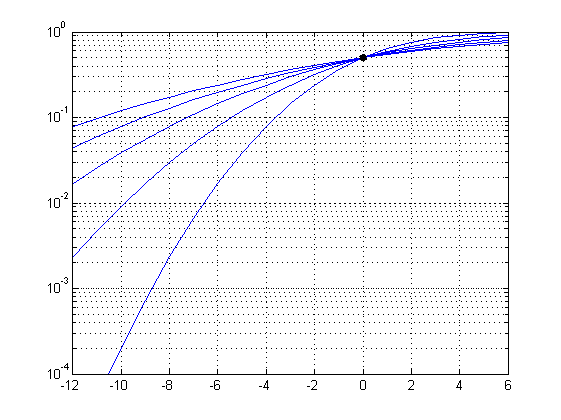
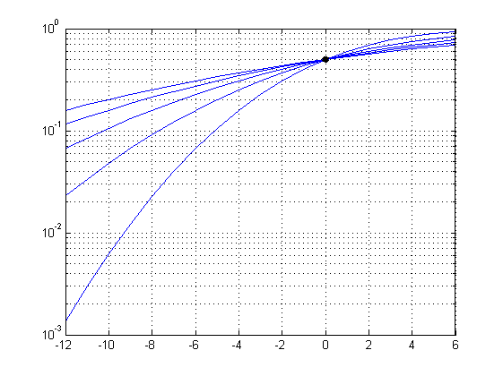

Contents
The lognormal distribution
Copyright 2007 Telecommunications Lab
x=-12:6;
as calculated in Haykin's book
1/sqrt(2) in the argument of the erf is missing
for sigma = 4:2:12 cdf = 1/2 * ( 1+ erf(x/sigma) ); semilogy(x,cdf); hold on; end grid on; plot(0,.5,'blackx','linewidth',3); hold off; xlim([min(x),max(x)]); ylim([1e-4,1]);
calculated correctly
for sigma = 4:2:12 cdf = 1/2 * ( 1+ erf(x/sigma/sqrt(2)) ); semilogy(x,cdf); hold on; end grid on; plot(0,.5,'blackx','linewidth',3); hold off; xlim([min(x),max(x)]);